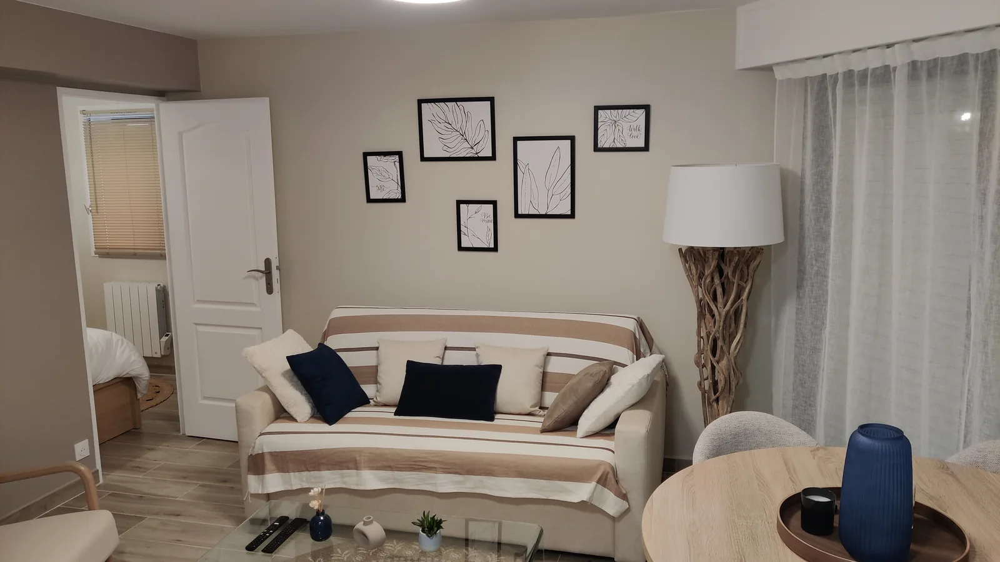
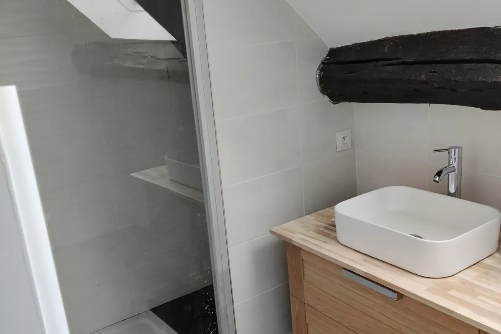
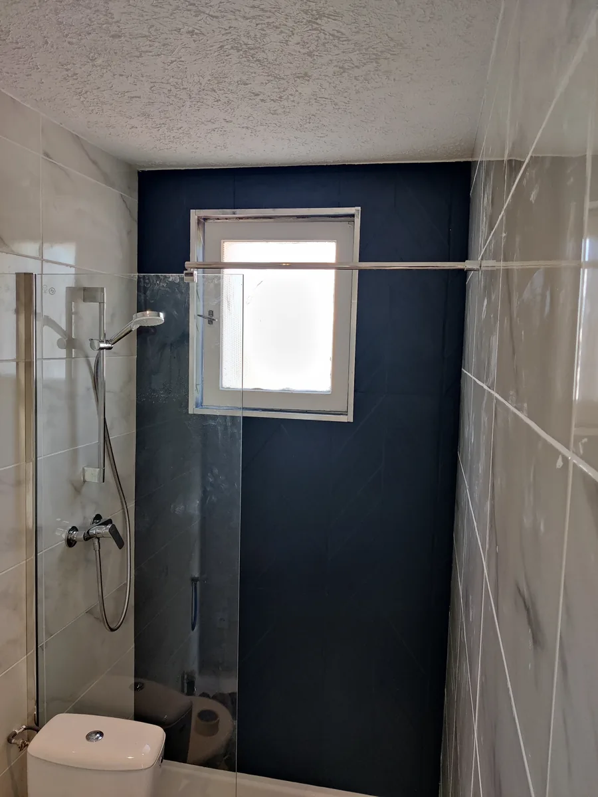
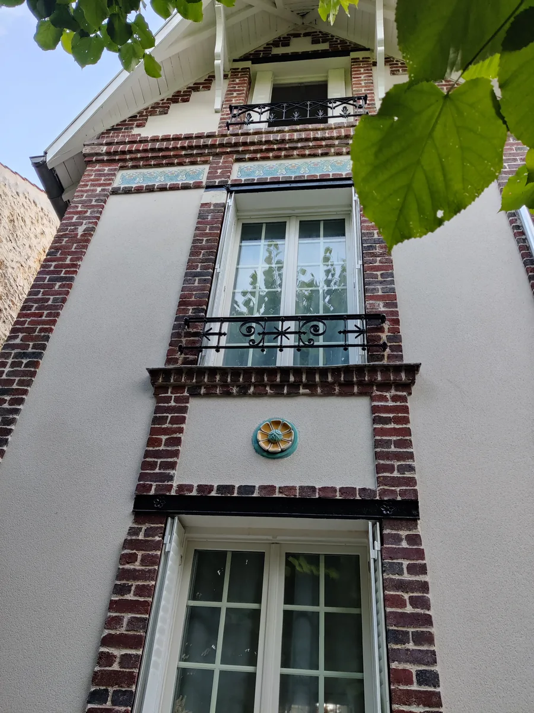
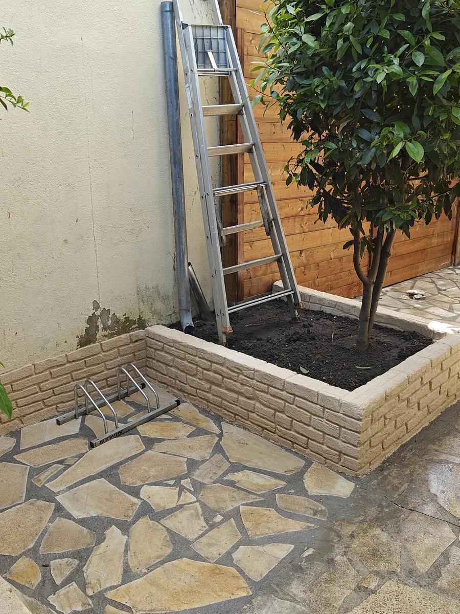
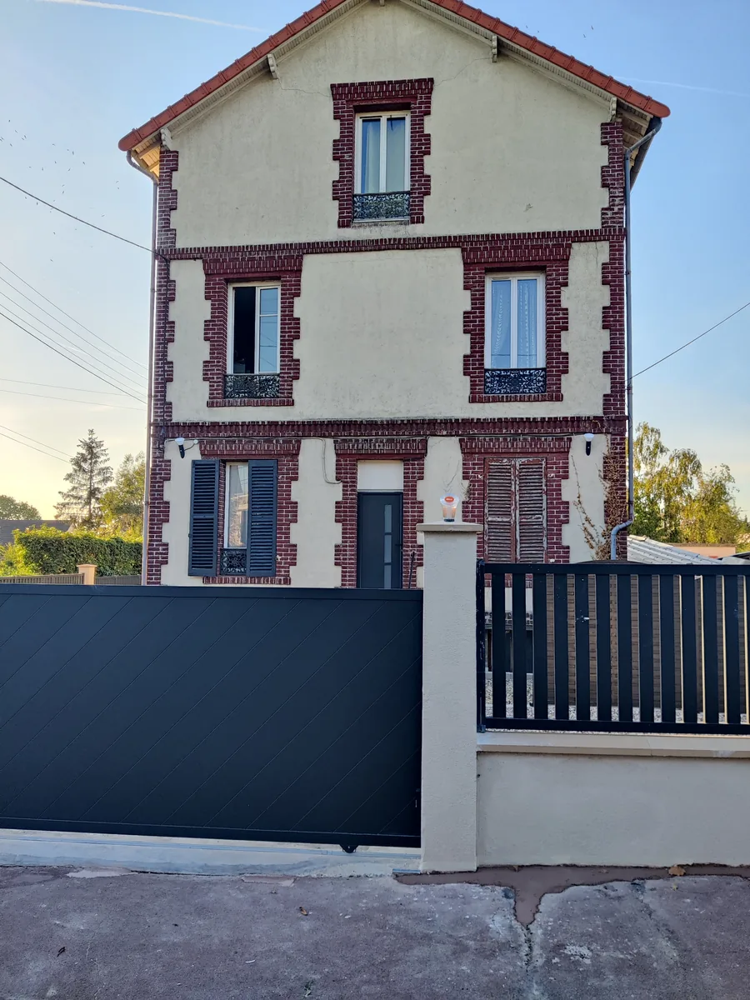
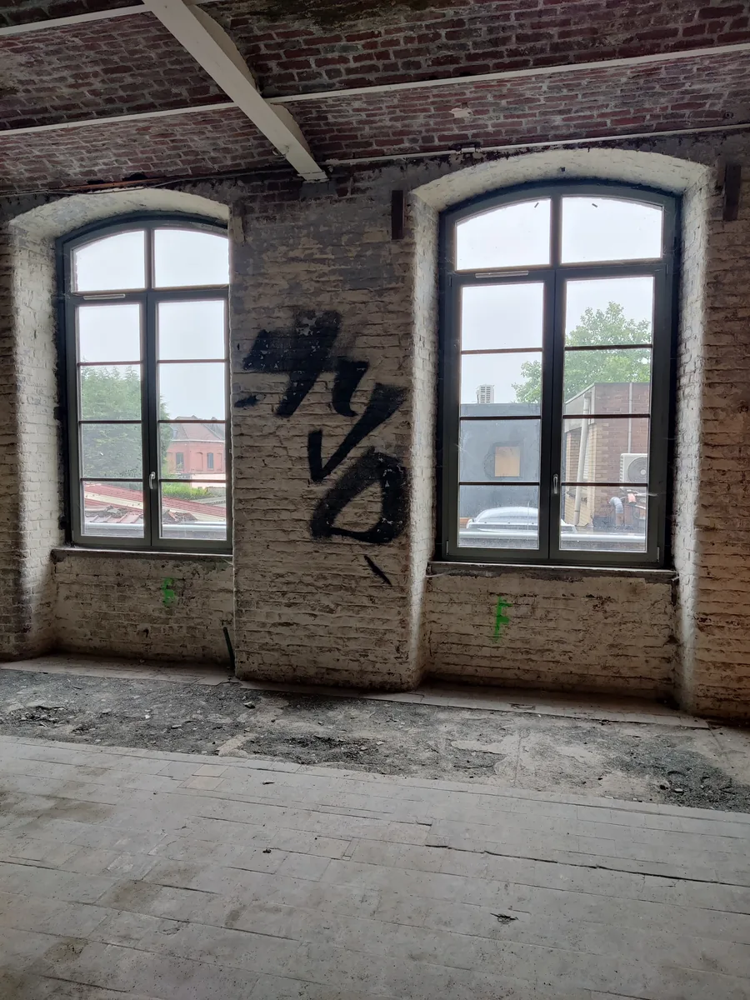
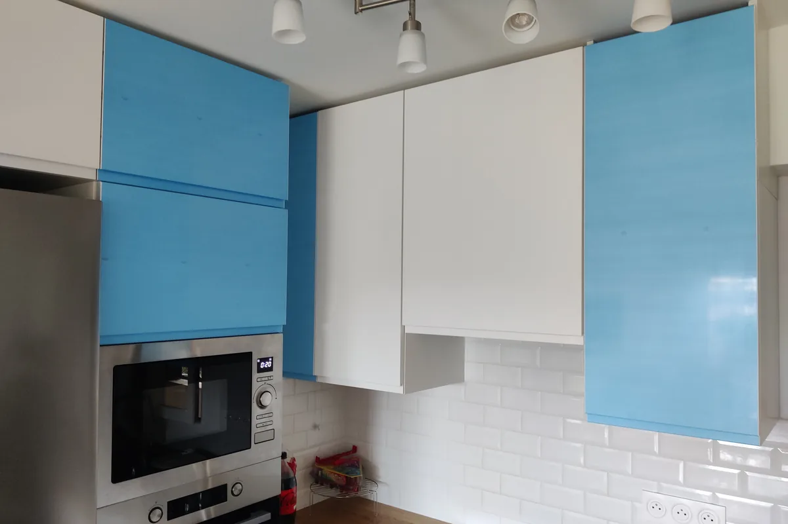

Des projets réels.
Des résultats visibles.
Chaque chantier présenté ici a été conduit par nos équipes et publié avec l'accord du client. Aucune image d'illustration, aucune mise en scène.
Nous présentons ici une sélection de projets que nous avons suivis et documentés. Les interventions de dépannage du quotidien ne sont pas systématiquement photographiées ni publiées.

Rénovation complète d’une maison à Enghien-les-Bains
Enghien-les-Bains · Val-d’Oise (95)
Une maison de 1901 en secteur protégé, remise à neuf sans rien perdre de son cachet, avec la touche contemporaine que les propriétaires voulaient.

Rénovation complète d’un appartement à Deauville
Deauville · Calvados (14)
Une rénovation complète confiée par un architecte partenaire, de la moquette d’origine à la livraison meublée.

Transformation d’une dépendance en studio
Un ancien garage transformé en logement : quatre couchages dans 22 m², des démarches en mairie à la livraison.

Salle de bain sous rampant à Versailles
Versailles · Yvelines (78)
Une salle de bain sous rampant refaite intégralement, avec la poutre d’origine laissée apparente.

Rénovation d’un studio de 28 m²
Un studio repris de fond en comble dans un immeuble occupé - sans que les parties communes en pâtissent.

Rénovation complète d’un appartement de 85 m²
Une rénovation tous corps d’état en Île-de-France, avec un travail de finition marqué sur les pièces d’eau.

Ravalement de façade en secteur ABF
Un ravalement en secteur protégé, où les frises en céramique d’origine ont été conservées plutôt que recouvertes.

Aménagements extérieurs : terrasse, muret et plantations
Terrasse, muret et plantations repris sur un extérieur de ville, sans que l’existant fasse les frais du chantier.

Clôture et mur de séparation à Montmorency
Montmorency · Val-d’Oise (95)
Une clôture et un mur de séparation montés en limite séparative, portail et piliers compris.

Friche industrielle transformée en loft de 190 m²
Un plateau industriel racheté puis transformé en loft de 190 m², avec le parti pris de conserver son caractère d’origine.

Rénovation complète d’un appartement à Vincennes
Vincennes · Val-de-Marne (94)
Une rénovation complète en Île-de-France, cuisine et salle d’eau comprises, avec optimisation des espaces.
Aucun projet ne correspond à ce filtre.
Parcourir par type de travaux
Les mêmes chantiers, classés par nature d'intervention.